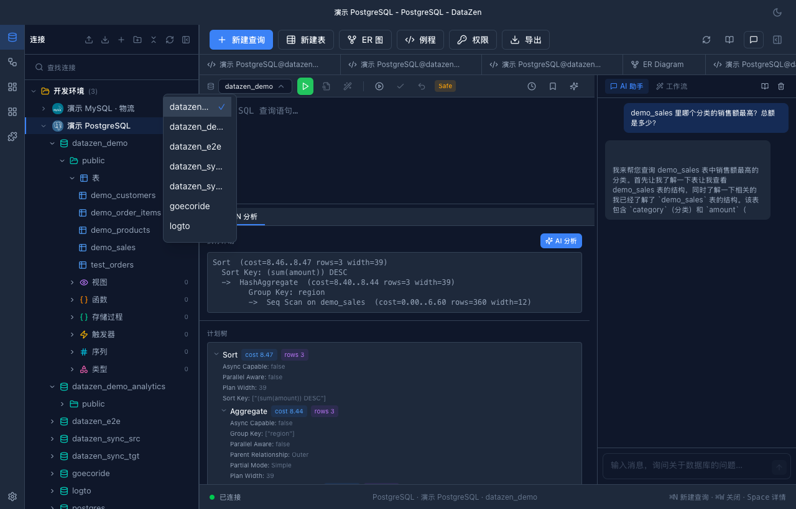
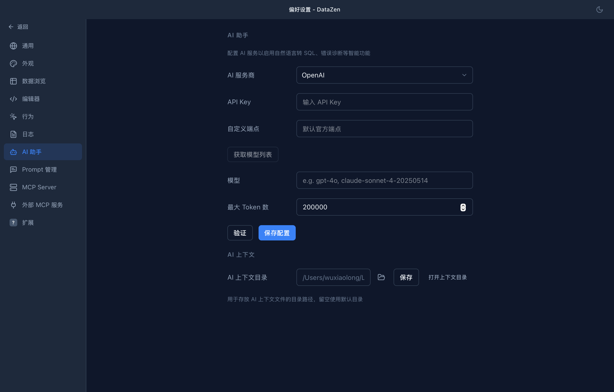

NL2SQL
自然语言 → SQL
用平常话描述需求。DataZen 自动带上当前库结构，流式生成可执行 SQL，可直接跑或再改。
- 自动使用当前连接的库结构作为上下文
- 流式输出，可随时停止
- 一键执行，或填入编辑器
- 支持 OpenAI、Anthropic、DeepSeek 与自定义端点

SQL 错误诊断
报错之后，不再对着文档猜
查询报错时点击「诊断」，AI 会结合错误信息和库结构定位原因，给出修正后的 SQL，一键应用到编辑器。
- 错误原文 + AI 分析 + 修改建议结构化展示
- 修正 SQL 一键应用，省去手改
- 常见的语法、列名、类型不匹配问题覆盖良好

EXPLAIN 分析
执行计划解读
看清计划、找出瓶颈，并用通俗语言给出优化建议。
- 可视化执行计划：扫描方式、行数、代价一目了然
- AI 标出慢节点并给出改进方向
- 内置驱动（如 PostgreSQL / MySQL）支持 EXPLAIN

AI Chat 侧栏
AI 对话侧栏
对话自动带上当前连接上下文——基于真实库结构，而不是空泛回答。流式回复；在供应商支持时可用推理模型。
- 自动注入 Schema 上下文，无需手动粘贴建表语句
@引用本地文件（白名单 + 512KB 上限 + 路径遍历防护）- 代码块一键提取为 SQL 插入编辑器

智能筛选
表格筛选也能说人话
「金额大于 1000 且状态是已发货」——在筛选框里直接输入自然语言，AI 解析成结构化的筛选条件并应用，列名校验与空值运算符自动处理。
- 自然语言 → 结构化过滤条件，可随时查看 / 修改
- 基于当前表列名做校验，避免字段写错
- 与排序、分页、虚拟滚动无缝配合

更多 AI 能力
不止于查询
- Schema 文档生成：一键为库结构生成 Markdown 文档
- 连接故障排查：连接失败时，结合 SSL / SSH / 超时等参数定位原因
- 查询历史分析：自动归纳历史查询的分类与用途
- Prompt 可配置：驱动级 + 用户级覆盖，AI 回答跟随界面语言
